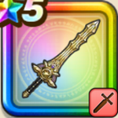

メダルキングの剣
攻略班 7.5点 / かえん斬りマヒャド斬りいなずま斬り渾身メタル斬りメダル輝星斬ワイルドフォース※錬成で強化可能
くわしい特徴
【レベル別習得スキル】 Lv1かえん斬り（消費MP：3）敵1体に威力130%のメラ属性斬撃ダメージを与える Lv10マヒャド斬り（消費MP：3）氷を剣にまとわせて斬り敵1体に威力130%のヒャド属性斬撃ダメージを与える Lv15いなずま斬り（消費MP：3）いなずまを剣に纏わせて斬り敵1体に威力130%のデイン属性斬撃ダメージを与える Lv20渾身メタル斬り（消費MP：25）敵1体にメタル系なら+7ダメージ、それ以外には威力300%の斬撃ダメージを与える Lv30メダル輝星斬（消費MP：最大MPの4%）ちいさなメダルの輝きを宿す彗星のごとき一撃で敵全体に威力350%の斬撃ダメージを与える Lv40攻撃力+10 Lv45さいだいMP+10 Lv50ワイルドフォース（消費MP：11）戦闘開始時自身の特殊効果の「属性ダメージ+」の効果値が最も高い属性のフォースを4ターンの間自身に付与する錬成スキル改1メダル輝星斬のダメージ+3%改2メダル輝星斬のダメージ+3%改3メダル輝星斬のダメージ+3%改4メダル輝星斬のダメージ+3%改5メダル輝星斬のダメージ+3%改6メダル輝星斬のダメージ+3%改7メダル輝星斬のダメージ+3%改8メダル輝星斬のダメージ+3% 【限界突破スキル】 1凸スキルの斬撃・体技ダメージ+3% 2凸スキルの斬撃・体技ダメージ+3% 3凸スキルの斬撃・体技ダメージ+3% 4凸スキルの斬撃・体技ダメージ+3%